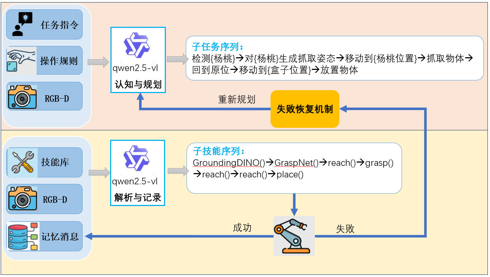

逐际动力 VLA 挑战赛
项目简介：基于 RoboTwin2.0 完成 Tron2 双臂机器人四项操作任务的自采数据、训练、评测与提交流程。
负责工作：使用三路 RGB 相机和 16 维机器人关节状态训练 ACT 模型；完成调整瓶子、叠三个碗等四项任务的专家数据采集，优化抓取策略并清洗专家轨迹；修复 Tron2 自碰撞、Curobo 末端可达性问题，围绕 action chunk、KL weight 等参数开展消融实验。最终任务成功率达 73%，位于排行榜第 7 位。
机器人运动控制 · 强化学习 · 具身智能
项目简介：基于 RoboTwin2.0 完成 Tron2 双臂机器人四项操作任务的自采数据、训练、评测与提交流程。
负责工作：使用三路 RGB 相机和 16 维机器人关节状态训练 ACT 模型；完成调整瓶子、叠三个碗等四项任务的专家数据采集，优化抓取策略并清洗专家轨迹；修复 Tron2 自碰撞、Curobo 末端可达性问题，围绕 action chunk、KL weight 等参数开展消融实验。最终任务成功率达 73%，位于排行榜第 7 位。
项目简介：复杂地形下的轮足机器人强化学习运动控制。
负责工作：基于 Isaac Lab / Isaac Sim 搭建双轮足、四轮足和六轮足 locomotion 强化训练代码，引入 DreamWaQ 训练框架，设计奖励函数并结合 PPO 调优；在 MuJoCo 中完成 sim2sim 测试和 sim2real 实机部署，实现机器人跨越 15cm 楼梯、55cm 高台地形。搭建四轮足 + 机械臂的 WBC 训练与部署框架，RL 策略输出四轮足关节动作，机械臂关节采用 IK 求解，通过两路 CAN 总线完成实机测试。
项目简介：基于 VLM 设计双层任务规划器，让机械臂理解自然语言指令并完成任务。
负责工作：提出双层任务规划 idea 并完成 prompt 工程；设计认知规划层感知物体、规划动作，设计解析记录层解析动作、反馈消息，将开放场景下的自然语言指令解析为可执行技能序列；集成 GroundingDINO、SAM、GraspNet 等基础模型，使用 RoboDK 进行仿真测试，并用 ROS 搭建通信机制、定义和调试机械臂技能。项目获国家级大创优秀结题（前 10%）。

系统架构图
项目简介：基于 Isaac Gym 搭建多机器人协同操作训练框架，面向两台 D1H 腿式机器人协同接触、夹持、抬升并移动箱体的任务。设计 GPU 并行强化学习环境，采用层级控制架构和 PPO 策略，并针对稀疏任务奖励设计阶段化 Reward Shaping。